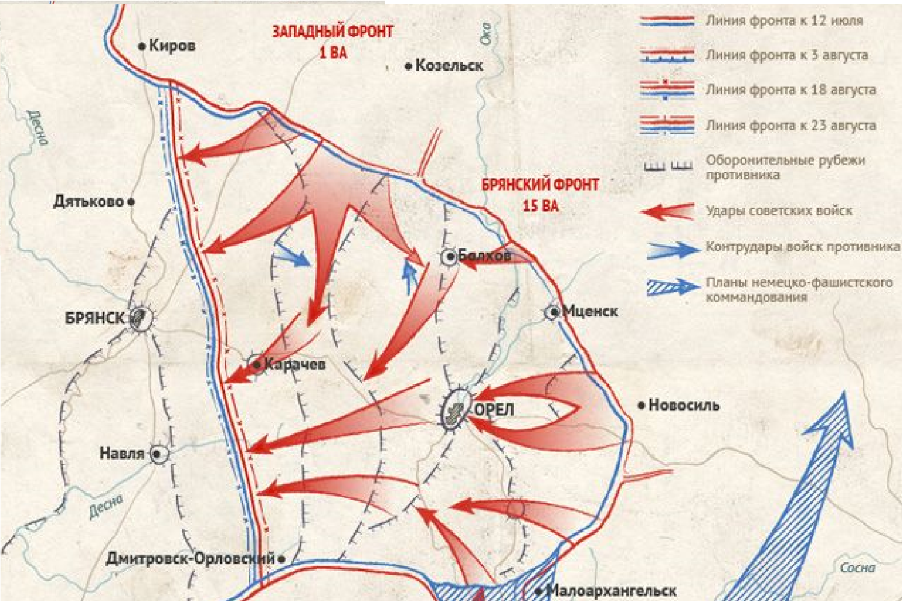
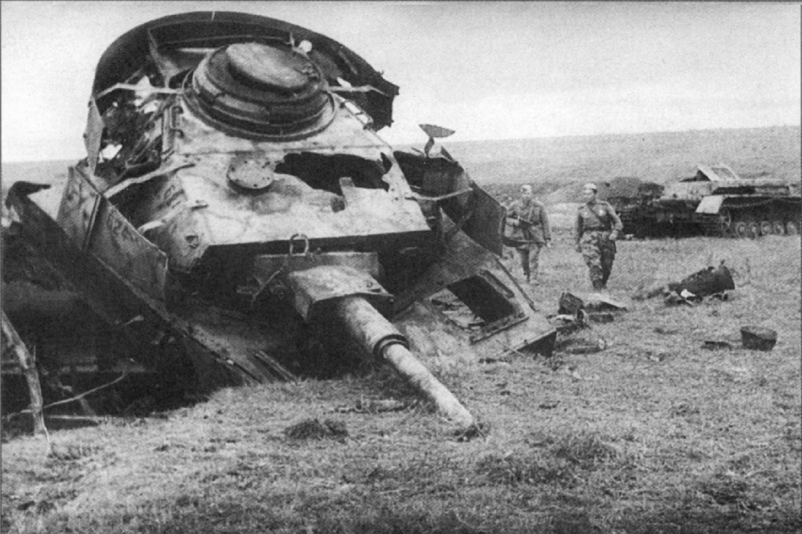
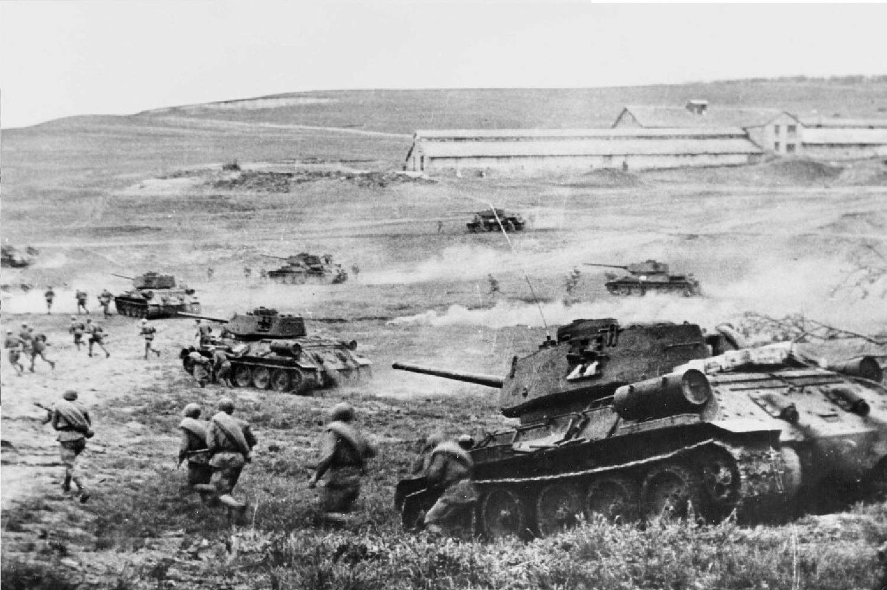

1943
|  |
|
|
Основные факты о Курской битве: 1. Стратегическое значениеКурская битва имела огромное стратегическое значение для обеих сторон. Для Германии это была попытка вернуть инициативу на Восточном фронте после поражений под Сталинградом и в других операциях. Советский Союз стремился укрепить свои позиции и перейти к стратегическому наступлению. 2. ПодготовкаОбе стороны тщательно готовились к битве, накапливая большие запасы техники и войск. Германия планировала провести мощное наступление с использованием танков и авиации. Советская сторона подготавливала оборонительные рубежи и создавалала многоуровневую оборону 3. СражениеБитва началась с наступления немецких войск, которые вели бои на нескольких направлениях. Основные сражения развернулись на курском направлении в районе городов Курск и Белгород. Немецкие танковые дивизии столкнулись с мощной советской обороной. 4. Поворотный моментНесмотря на первоначальные успехи немецких войск, советское командование смогло организовать успешное контрнаступление. Советы использовали глубокую оборону, а также резервы, чтобы противостоять натиску противника. В результате немцы понесли серьезные потери в технике и живой силе. 5. ИтогиКурская битва завершилась стратегической победой Советского Союза. Она стала началом коренного перелома в войне на Восточном фронте, после которого советские войска начали активное наступление, что в конечном итоге привело к освобождению оккупированных территорий и к победе над нацистской Германией в 1945 году. |
 |
|  |
Курская битва известна также своими масштабными танковыми сражениями, в том числе знаменитым сражением на Прохоровском поле, которое стало одним из крупнейших танковых сражений в истории. |